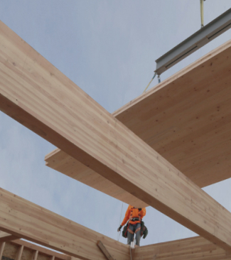

Duurzame materialen
Alle EcoCabins hebben een hoge isolatiewaarde, worden geproduceerd met indien mogelijk duurzame en/of natuurlijke materialen en hebben als opvallende uiterlijke kenmerk de ‘ronde hoeken’, mogelijk gemaakt door het specifieke materiaalgebruik. De voordelen van bouwen met hout zijn legio: hout is licht, flexibel, isoleert goed en bouwt snel en efficiënt.
